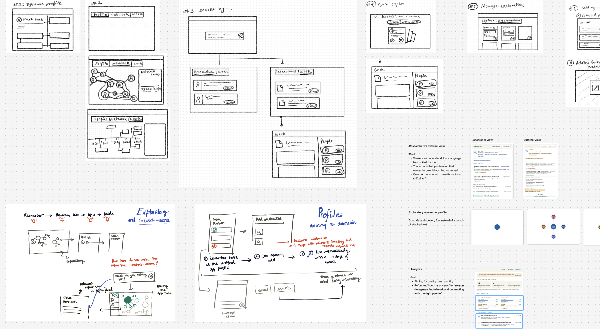
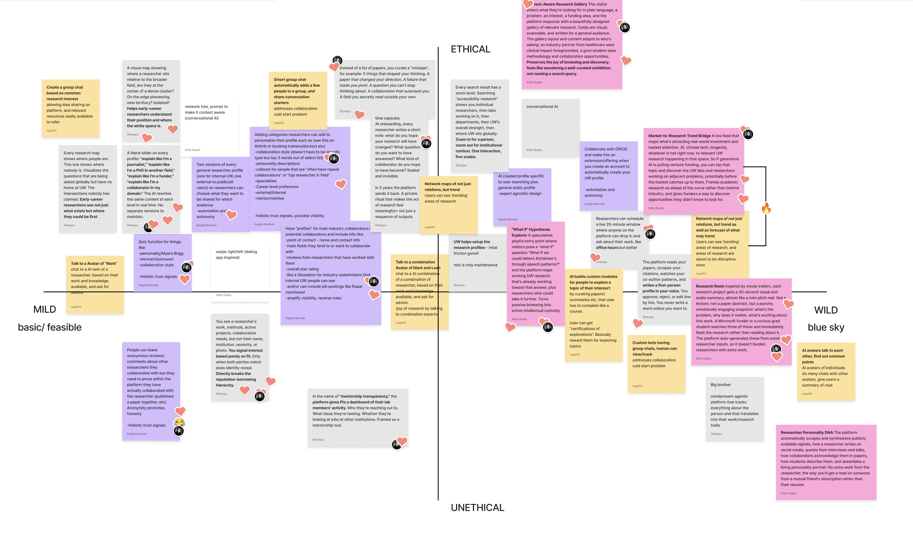
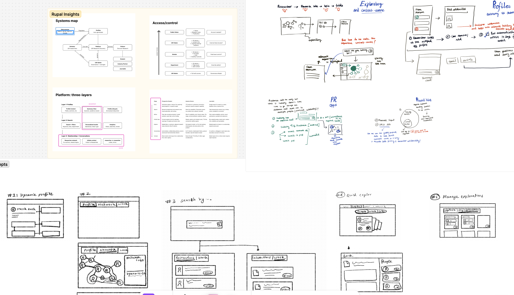
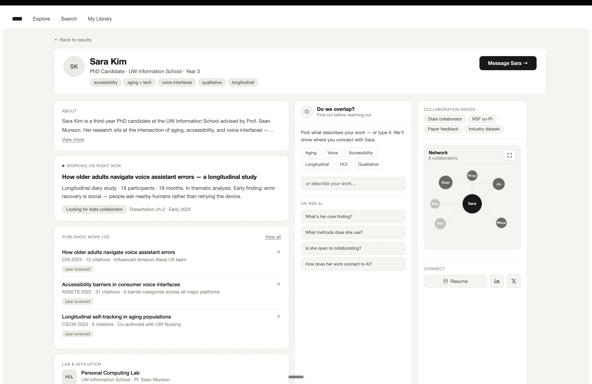
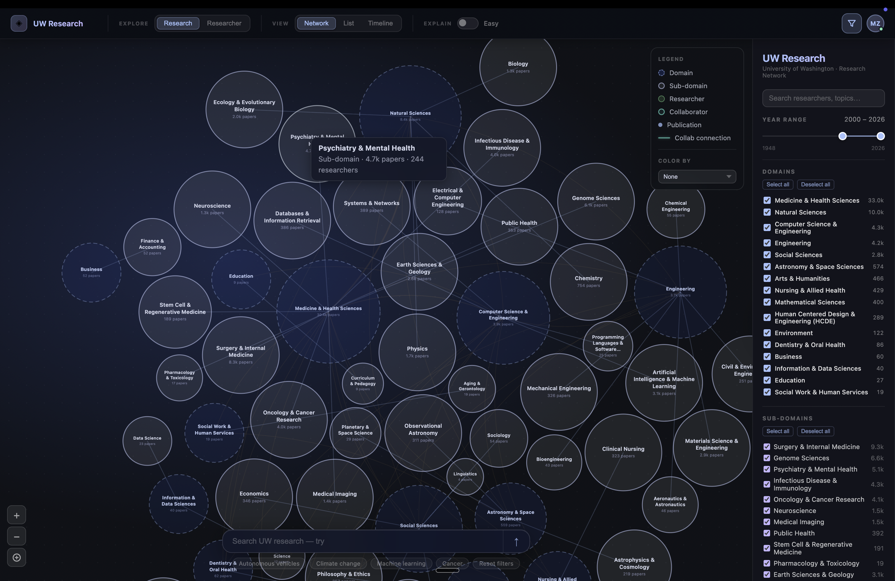
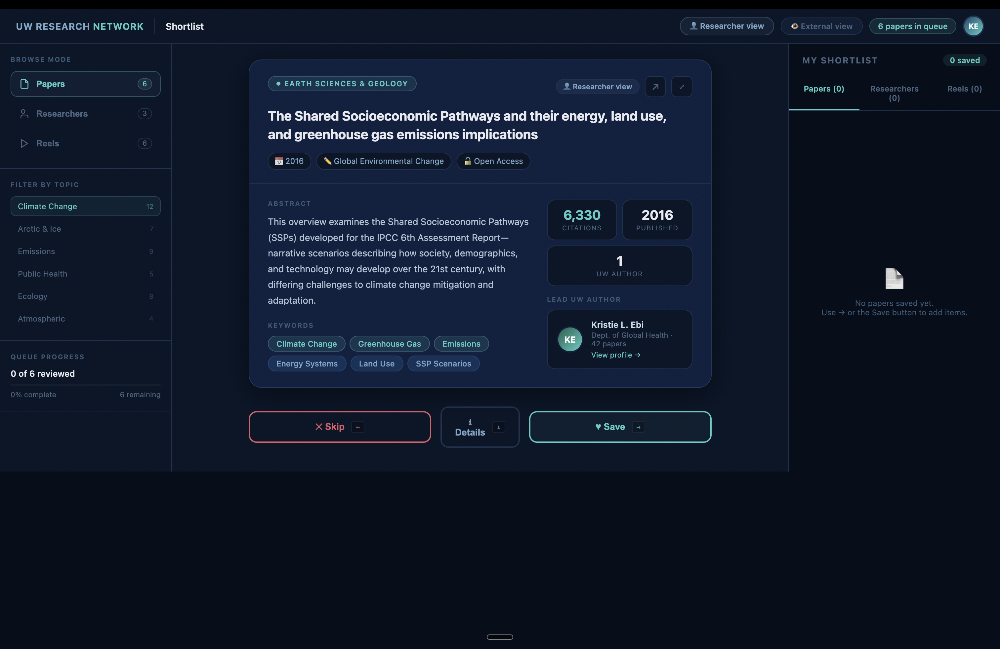
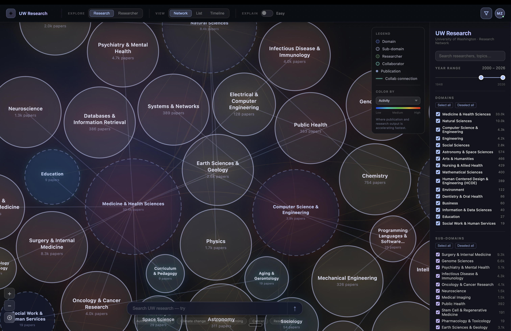

HCDE Capstone 2026 · UW ORIS
Dub's Research Hub
Connecting UW research to the world
Background
UW Office of Research Information Services
8
Nobel Prizes recognizing UW excellence
$1.74b
Sponsored grants & contracts, 2025
#8
Global academic ranking, US News 2025
- ORIS is the infrastructure and administrative backbone of UW research — the plumbing of a $1.74B enterprise.
- ORIS mission: seed interdisciplinary programs, facilitate partnerships, and promote research impact.
- The shift: from reducing admin work for researchers → to advancing UW research impact.
- Admin systems ≠ storytelling systems. A new layer is needed.
Process
Convergence and divergence
Problem framing
Where we started from...
Research profiles are scattered across platforms,
which makes it difficult to find the right researcher and understand what they're actively working on.
Problem framing
User research
30+
Competitive tools reviewed
Primary & secondary research
Six key insights
1
AI-driven efficiency has accelerated publication volume and led to highly targeted research.
4
Researcher profiles are scattered and outdated — and consolidation alone can't fix it.
2
Who you know still determines who you trust and work with.
5
Academia is structurally competitive, and ideas are guarded until the time is right.
3
Early-mid career researchers face barriers to collaboration as they are building their networks.
6
External stakeholders find academic databases intimidating and inaccessible.
User strategy
Who are we catering to?
Primary users
Early to mid-career researchers
PhD candidates, postdocs, and assistant professors
External stakeholders
Industry partners, journalists, prospective students
Secondary users
Seasoned researchers
Associate/full professors and principal investigators
All in relation to University of Washington
Problem space
Two bottlenecks
UW cannot clearly answer for the outside world:
"What research is happening here, and who should I work with?"
- Research is fragmented across lab sites, faculty pages, and external platforms
- Information is inconsistent and outdated
- Discovery requires manual effort
Inside UW, researchers cannot easily answer:
"Who here is working on X, and how do I connect with them?"
- Visibility is limited to immediate networks
- Cross-department discovery is weak
- Collaboration depends on informal channels
Problem framing
A missing layer
External stream
Partners and funders often struggle to identify relevant research and researchers across UW's distributed research ecosystem.
⟺
Internal stream
Researchers struggle to discover related work and identify potential collaborators across departments.
↓
Missing layer
UW lacks a unified system that can aggregate research across the university, make it discoverable and navigable, and support both discovery (finding) and signaling (showing) — for audiences inside and outside.
How might we...
Build a Unified Research Platform that serves two independent functions.
External-facing
- One place to explore UW research
- Clear entry points for collaboration
- Structured visibility of research areas and people
Internal-facing
- Enables researchers to discover work across UW
- Supports collaboration and interdisciplinary exploration
- Reduces reliance on informal networks
Ideation
Sketching
We each independently sketched solutions to the problems surfaced through user research, then came together to discuss and group ideas — surfacing recurring themes that shaped our direction.



Ideation
Key idea 1: Network maps
Can we visualize connections between domains, subdomains, researchers, and labs through interactive network maps — making research relationships navigable rather than hidden?

Ideation
Key idea 2: Dynamic profiles
Give researchers a single, living profile that automatically surfaces their latest work, active projects, and evolving collaborations — no manual updates required.

Ideation
Key idea 3: Swipe to save
Can we let researchers skim AI-generated paper summaries one at a time, save what's interesting with a single action, and revisit their collection later — reducing the effort of staying current?

Prototypes
Preliminary prototypes
We built early prototypes for each key idea and put them in front of users — testing assumptions, probing reactions, and identifying which directions were worth pursuing further.




Prototypes
Prototype testing
User sessions
We tested with 8 participants, giving them open access to explore the prototype freely and share their unfiltered reactions as they navigated each feature.
Feature prioritization
Using the insights gathered, we mapped every feature against user responses and prioritized what to carry forward into the final prototype.
User testing findings
What we learned
✓ What worked
✓
Network visualizations made research discovery more intuitive and helped users uncover unexpected connections across people and domains.
✓
Learn/Shortlist browsing was consistently well received, giving users a lightweight way to explore researchers and research without committing to a search.
✓
Researcher profiles helped users quickly understand expertise, interests, and collaboration opportunities, creating confidence in who to engage with.
○ What needed refinement
○
Dense visualizations and information-heavy screens felt overwhelming, making it difficult for users to quickly identify the most relevant information.
○
Timeline views lacked a clear value proposition, with participants finding them confusing or unnecessary.
○
Research Reels generated mixed reactions, revealing unclear expectations about the feature's purpose and benefits.
Outcome
Information architecture
Synthesizing user feedback across all testing sessions, we identified recurring patterns in how people navigated and discovered information — and used those insights to define the final structure of Dub's Research Hub.
Outcome
Prototype ↗
Data
Scraped from UW's public platforms and processed with Python to serve as a live data source — real content, not placeholder copy.
Data pipeline image
Prototyping tool
Built with Claude Code to simulate key interactions, on top of real UW data.
Key features
Home page
Users can begin exploring UW research through search or by jumping directly into the interactive research network.
Internal researcher
"Who at UW is working on topics related to my research?"
External stakeholder
"What kind of research is happening at UW?"
Key features
Search results
Users can enter a search query, discover relevant results, and see how those results fit within the broader research landscape through the network map.
Internal researcher
"Can I find researchers working on this specific area?"
External stakeholder
"Who should I talk to about this topic?"
Key features
Network map
Users can visually explore relationships between domains, subdomains, researchers, and collaborators to uncover unexpected connections and research opportunities.
Internal researcher
"Who else at UW should I be collaborating with?"
External stakeholder
"How are these researchers and topics connected?"
Key features
List view
Users can browse research in a familiar list format when they prefer structured results over exploratory network navigation.
Internal researcher
"Can I quickly scan everyone working in this field?"
External stakeholder
"Show me the most relevant people and research."
Key features
Filters
Users can narrow results by research domains, topics, and areas of interest to focus on the most relevant content.
Internal researcher
"Can I narrow this to my specific research area?"
External stakeholder
"Can I focus on the topics I care about?"
Key features
Profile panel
Users can click on a researcher within the network map to quickly learn about their expertise, work, and background.
Internal researcher
"Who is this researcher and why are they relevant?"
External stakeholder
"Is this the right expert for my needs?"
Key features
Profile page
Users can dive deeper into a researcher's profile, research history, collaborations, and AI-powered exploration tools.
Internal researcher
"What are they working on and how do we overlap?"
External stakeholder
"What expertise does this researcher have?"
Key features
Profile → AI chat
Users can ask questions about a researcher's work and receive answers grounded in that specific profile.
Internal researcher
"Can I quickly understand their work without reading everything?"
External stakeholder
"Can you explain this research in plain language?"
Key features
Profile → Connection details
Users can visually explore who a researcher has worked with and understand the relationships within their academic network.
Internal researcher
"Who do they collaborate with across UW?"
External stakeholder
"Who else should I be looking at?"
Key features
Learn
Users can discover featured research, emerging topics, and curated content from across the UW research ecosystem.
Internal researcher
"What interesting research is happening outside my field?"
External stakeholder
"What are the most exciting research areas at UW?"
Key features
Learn → Topic information
Users can learn about a topic in depth before deciding whether to explore related researchers and research further.
Internal researcher
"Why is this topic important and who works on it?"
External stakeholder
"Help me understand this area before diving deeper."
Key features
Learn → Learning cards
Users can swipe through research content, bookmark interesting discoveries, and skip content that is less relevant to them.
Internal researcher
"What research should I explore next?"
External stakeholder
"Can I discover research without knowing what to search?"
Key features
Learn → Saving to short lists
Users can collect bookmarked topics and researchers into a shortlist for future exploration and deeper investigation.
Internal researcher
"How can I save researchers for future collaboration?"
External stakeholder
"How can I keep track of interesting discoveries?"
Key features
Library
Users can access everything they have bookmarked and organize researchers, papers, and topics into custom folders.
Internal researcher
"Can I organize researchers and papers by project?"
External stakeholder
"Can I save everything relevant in one place?"
Key features
Dark mode
Users can explore dense research information in either light or dark mode based on their visual preferences.
Internal researcher
"Can I review dense research content more comfortably?"
External stakeholder
"Can I browse in the visual theme I prefer?"
Stakeholder Handoff | Project Direction
Why One Platform?
One of the most consequential decisions in the project was choosing to address both internal and external visibility through a single platform. This rationale is included because future implementation efforts need to understand why the project deliberately avoided creating separate solutions for researchers and external stakeholders.
Internal Visibility
Researchers struggle to discover relevant work and collaborators across departments.
Key challenges
- Discovery depends on personal networks
- Cross-disciplinary collaboration is difficult
- Research efforts remain siloed
Shared Discovery Infrastructure
Researcher Profiles
Research Domains
Publications
Affiliations
Search
Network Relationships
Recommendations
External Visibility
External stakeholders struggle to understand what research exists at UW and who they should engage.
Key challenges
- Information is fragmented
- Experts are difficult to identify
- Funding and partnership opportunities are missed
Both challenges rely on the same researcher data and discovery infrastructure. Building separate systems would duplicate effort and recreate fragmentation.
Stakeholder Handoff | Design Foundation
Design Principles
These principles emerged directly from our research findings and served as the decision-making framework throughout the design process. They are included so future teams understand the reasoning behind the solution, not just the features themselves.
01
Balance Automation with Researcher Autonomy
Auto-generated profiles reduce setup burden while preserving researcher control.
02
Design for Expert-Agnostic Collaboration
Discovery should not require academic insider knowledge.
03
Align with Existing Research Workflows
Leverage systems researchers already use rather than creating new behaviors.
04
Preserve the Joy of Research
Support curiosity, exploration, and serendipitous discovery.
05
Surface Holistic Trust Signals
Collaboration depends on more than publications and citations.
06
Amplify Research Visibility
Increase visibility across researchers, funders, collaborators, and the public.
These principles became the lens through which we evaluated concepts, features, and tradeoffs.
Stakeholder Handoff | Recommendation
Recommended Proposal
This slide summarizes our final recommendation based on user research, concept testing, sponsor feedback, and implementation constraints. It clarifies what should be prioritized in an initial version of the platform versus opportunities that can be explored later.
Launch Recommendation
✓
Explore through network visualization
✓
Researcher profiles with AI-assisted understanding
✓
Search and natural-language discovery
✓
Learn / Shortlist browsing experience
✓
Personal library and saved collections
✓
Public and researcher access paths
Future Opportunities
→
Research Opportunity Map
→
Heatmap overlays
→
Research Reels
→
Timeline views
→
Federated discovery across institutions
The initial release should focus on discovery, researcher visibility, and collaboration. Opportunity maps, timelines, reels, and cross-institution discovery should be treated as future phases after the core platform demonstrates value.
Stakeholder Handoff | Design Decisions
Key Decisions & Tradeoffs
The final proposal reflects a series of design tradeoffs informed by research, testing, and stakeholder conversations. Capturing these decisions helps future teams understand why the platform evolved in its current direction and prevents revisiting already-resolved questions.
1
Explore-First Experience
External stakeholders often did not know what to search for. We shifted from a search-first interface to exploration through the network visualization.
2
Auto-Generated Profiles
Researchers consistently described profile maintenance as burdensome. Auto-generation reduces setup while creating value from day one.
3
Unified Platform
Internal and external visibility problems share the same data ecosystem. A single platform creates consistency and reduces fragmentation.
4
Warm Introductions over Direct Messaging
Researchers expressed stronger trust in existing connections than cold outreach. We removed direct messaging and surfaced mutual connections instead.
5
Show Trust, Don't Ask for Trust
Researchers described trust as emerging through relationships and shared collaborators. The platform surfaces trust through collaboration history and mutual connections rather than self-reported traits.
"We started with researcher profiles. We ended with a research discovery ecosystem."
Stakeholder Handoff | Implementation
Critical Assumptions
The proposal depends on several assumptions that were outside the scope of the capstone to fully validate. These assumptions should be treated as areas for additional research, testing, and implementation planning.
1
Data Source Access
ORCID, UW Directory, Google Scholar, and related data sources remain accessible for profile generation and discovery.
2
Data Quality
Source data is accurate and complete enough to generate useful researcher profiles.
3
Institutional Authority
ORIS has the authority to aggregate, display, and maintain researcher information.
4
Researcher Participation
Researchers will periodically update collaboration interests, current focus areas, and profile information.
5
AI Reliability
AI-generated explanations and summaries are accurate enough for institutional representation.
6
Long-Term Governance
ORIS has sufficient funding, resources, and governance capacity to operate the platform over time.
These assumptions represent critical dependencies that should be validated before large-scale implementation.
Stakeholder Handoff | Future Roadmap
Roadmap to Implementation
The capstone concludes with a validated concept and working prototype. This roadmap outlines the recommended sequence of activities required to move from prototype to a deployable institutional platform.
Phase 1
Internal Foundation
Months 1–6
Connect ORCID, UW Directory, and Google Scholar
Auto-generate researcher profiles
Launch internally to UW researchers
Build researcher trust and profile ownership
→
Phase 2
External Access & Core Features
Months 6–12
Open platform to external stakeholders
Launch discovery experience
Introduce AI-assisted profile understanding
Enable researcher onboarding and profile refinement
→
Phase 3
Expanded Features
Year 2+
Research Opportunity Map
Research Reels
Timeline views
Cross-institution discovery
Advanced collaboration features
A phased rollout reduces implementation risk and creates checkpoints for validating assumptions before expanding platform scope.
Stakeholder Handoff | Reflection
What We Learned
Beyond the final design, the project generated lessons about research ecosystems, institutional design, and collaboration. These reflections capture the most important insights we would pass to future teams continuing this work.
The Pivot
We started with a brief focused on researcher profile discoverability. Research revealed a broader challenge around visibility, trust, and collaboration in an AI-accelerated research landscape.
The Surprise
Researchers had already adapted to fragmented systems. The deeper challenge was not profile management, but discovering the right people and building trusted connections.
The Unresolved Tension
Reducing profile maintenance through automation while preserving meaningful researcher control over public representation remains the most important unresolved design challenge.
"The job of a design team is not to execute the brief, but to use the brief as a starting point and be honest when the evidence points somewhere else."
Prototype built using Claude Code and Warp
|
Research synthesis supported by NotebookLM
|
Recommendations informed by 30+ competitive analyses, 26 survey responses, 16 interviews, 14 concept tests, and sponsor feedback
Stakeholder Handoff | Ethics & Governance
Risks, Ethics & Governance
Because Dub's Research Hub aggregates researcher information, surfaces AI-generated explanations, and increases visibility across the research ecosystem, implementation requires careful governance. This slide captures the primary risks identified during the project and the mitigation strategies recommended for future teams.
Risk Areas
⚠
Data aggregation without explicit consent
⚠
AI-mediated misrepresentation
⚠
Visibility inequality and prestige amplification
⚠
Industry influence on research priorities
Recommended Mitigations
✓
Researcher review, editing, and opt-out controls
✓
Clear AI labeling and source attribution
✓
Discovery mechanisms that do not prioritize citations alone
✓
Ongoing governance and monitoring by ORIS
Increasing visibility creates value, but visibility must be paired with transparency, researcher control, and institutional stewardship.